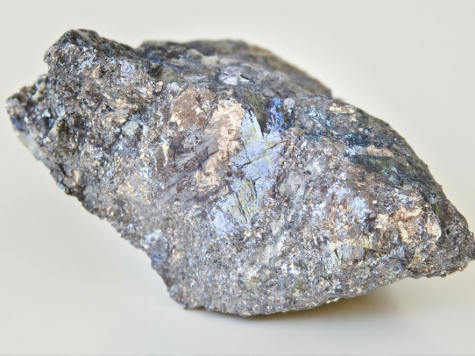
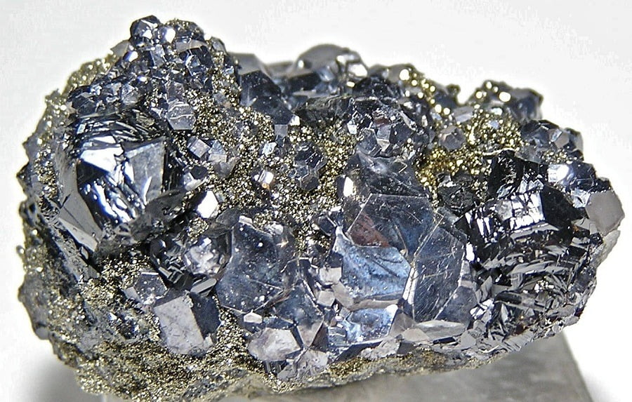

Свинец
Свине́ц (лат. Plumbum; обозначается символом Pb) — элемент 14-й группы (по устаревшей классификации — главной подгруппы IV группы), шестого периода периодической системы химических элементов Д. И. Менделеева, с атомным номером 82 и, таким образом, содержит магическое число протонов. Простое вещество свинец — ковкий, сравнительно легкоплавкий тяжёлый металл серебристо-белого цвета с синеватым отливом. Плотность свинца — 11,35 г/см³. Свинец и его соединения токсичны, при этом органические соединения свинца более опасны, чем неорганические. Известен с глубокой древности.

Свинец выплавляли из руды в Месопотамии, Малой Азии, Египте, Греции и Риме 8 тыс. лет назад; вероятно, это первый известный человеку металлургический процесс. Свинец применяли для покрытия керамики глазурью, изготовления монет и статуй (Древний Египет), листовой свинец служил настилом для сохранения влаги (Вавилон), материалом труб водопровода, обшивки деревянных корпусов кораблей (Древний Рим), кровли зданий (Британия) и др. Использовали свинец для очистки золота и серебра методом купелирования. Геродот в 5 в. до н. э. писал о методе укрепления железных и бронзовых скоб в каменных плитах путём заливки отверстий свинцом. Такие скобы были найдены при раскопках Микен. С изобретением огнестрельного оружия свинец стал материалом для изготовления пуль и дроби. Вплоть до 17 в. свинец путали с оловом (лат. plumbum album – «белый свинец», т. е. олово; лат. plumbum nigrum – «чёрный свинец», собственно свинец). Происхождение названия «свинец» неясно.
Содержание свинца в земной коре 1,3·10−3 % по массе, в водах океана 0,03 мкг/дм3, в речных водах 0,2–8,7 мкг/дм3. Природный фон в атмосфере 2·10−9–5·10−4 мкг/м3. В теле взрослого человека содержится 7–15 мг Pb. Известно около 80 минералов, содержащих Pb; промышленное значение имеют галенит PbS, англезит PbSO4, церуссит РbСО3, пироморфит Pb5(PO4)3Cl. В месте залегания свинцовых руд почва, растения и воды содержат до 1 % Pb.

Для получения свинца в основном используют руды, содержащие галенит. Сначала методом флотации получают концентрат, содержащий 40—70 процентов свинца. Затем возможно несколько способов переработки концентрата в веркблей (черновой свинец): прежде широко распространённый метод шахтной восстановительной плавки, разработанные в СССР метод кислородно-взвешенной циклонной электротермической плавки свинцово-цинковых продуктов (КИВЦЭТ-ЦС), метод плавки Ванюкова (плавка в жидкой ванне):37-38. Для плавки в шахтной (ватержакетной) печи предварительно производят агломерационный обжиг концентрата, а затем его загружают в шахтную печь, где происходит восстановление свинца из оксида.До 45 % от общего потребления свинца идёт на производство электродов аккумуляторов; до 20 % – на изготовление проводов, кабелей и покрытий к ним. Свинец используют для изготовления футеровки, труб и аппаратуры в химической промышленности. Применяют сплавы свинца с Sn, Са, Sb, Cu, As, Cd. В строительстве свинец используют в качестве изоляции, уплотнителя швов, стыков, при создании сейсмостойких фундаментов, в военной технике – для изготовления шрапнели и сердечников пуль. Экраны из свинца служат для защиты от радиоактивного и рентгеновского излучений. Соединения свинца входят в состав пигментов, эмалей, стёкол, керамики, материалов оптоэлектроники и т. д.Свинец токсичен. Основные источники загрязнения свинцом окружающей среды: металлургические предприятия, выхлопные газы двигателей внутреннего сгорания, сточные воды промышленных предприятий и др.